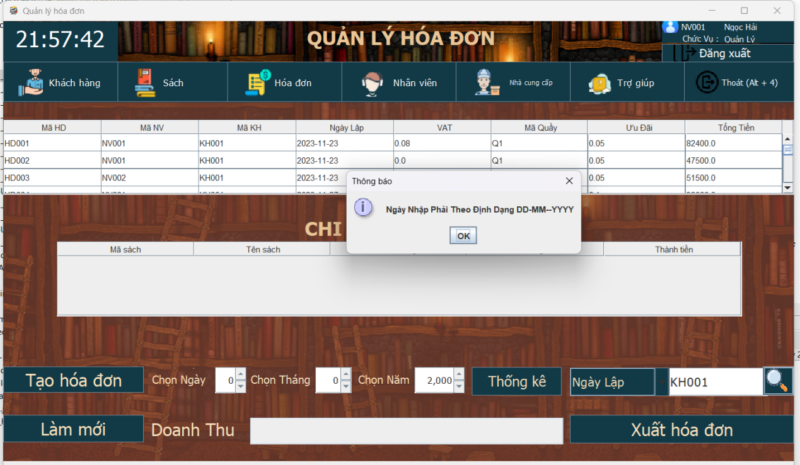

-Hóa đơn sẽ được lập dựa trên nhân viên đăng nhập và ngày hiện tại lập hóa đơn
-Khi chọn 1 tên sách / 1 tên sản phẩm thì giao diện sẽ hiển thị các thông tin như mã sách, tên sách, đơn giá, hình ảnh sách sau khi nhập số lượng và ấn phím enter thì thành tiền sẽ được hiển thị
-Sau khi chọn xong sách thì click nút thêm sản phẩm vào hóa đơn để thêm sách / sản phẩm vào trong hóa đơn đó
-Nếu như muốn chỉnh sửa hoặc bỏ cuốn sách trong hóa đơn đó thì hãy click sản phẩm muốn chỉnh sửa hoặc xóa trong bảng , đối với việc sửa thì nhập lại và nhấn lại nút thêm sản phẩm vào hóa đơn
+VAT thông thường sẽ là 8%, nhưng đối với những cuốn sách như SGK hoặc chính trị sẽ được miễn thuế 0%
+Ưu đãi nếu sản phẩm trong hóa đơn < 3 sản phẩm thì ưu đãi sẽ là 5%,
+Sản phẩm trong hóa đơn >=3 và <10 ưu đãi sẽ là 10%
+Sản phẩm trong hóa đơn >=10 và <= 20 ưu đãi sẽ là 15%
+Sản phẩm trong hóa đơn > 20 ưu đãi sẽ là 30%
+Tổng Tiền sẽ bằng tổng tiền các sản phẩm trong hóa đơn chưa tính ưu đãi (tổng thành tiền của các sản phẩm trong hóa đơn) và VAT sẽ bằng tổng tiền = tổng tiền các sản phẩm - %ưu đãi + %VAT
-Sau khi thêm các sản phẩm vào hóa đơn thì tổng tiền đã tính thuế, VAT, ưu đãi sẽ được hiển thị lên giao diện
-Sau khi thêm các sản phẩm vào hóa đơn thì cần phải nhập tiền nhận và tiền nhận này phải > tổng tiền
-Sau Khi Nhập Tiền Nhận Xong Thì Tiền Thừa Sẽ Được Hiển Thị nếu hợp lẹ bạn có thể nhấn nút tạo hóa đơn để tạo hóa đơn đó sau khi tạo xong các thông tin sẽ được lưu bên phần xem chi tiết hóa đơn và các trường trên giao diện sẽ được xóa trắng
-Nút làm mới sẽ xóa các dữ liệu cũ trên ô như số lượng, VAT, thành tiền, ưu đãi, tổng tiền, tiền nhận, tiền thừa
-Các trường nhập như số lượng, tiền nhận sẽ được cảnh báo nếu như nhập sai định dạng hoặc tiền nhận < tổng tiền
+Trong giao diện Xem Chi Tiết Hóa Đơn có các chức năng như sau
+Xuất Hóa Đơn : Chọn 1 hóa đơn ở trên bảng sẽ hiển thị ra những sản phẩm của hóa đơn đó và ấn nút Xuất hóa đơn hóa đơn sẽ được xuất ra dưới dạng word và pdf nếu như muốn xem hóa đơn đó thì khuyến cáo nên sử dụng word của phần mềm wps nó sẽ đẹp và dễ nhìn hơn
Hóa đơn khi được xuất:
+Thống Kê Hóa Doanh Thu: Có 3 dạng thống kê theo ngày tháng năm, thống kê theo tháng, thống kê theo năm.
-Để thống kê theo năm : Chỉ Cần Nhập hoặc chọn click vào biểu icon tăng dần trong năm, ngày và tháng để là 0
Doanh Thu Theo Năm Sẽ Được Hiển Thị
-Để Thống Kê Theo Tháng : Chỉ Cần Nhập hoặc chọn click vào biểu icon tăng dần trong năm và tháng , ngày thì để là 0
Doanh Thu Theo Tháng và Năm Sẽ Được Hiển Thị
-Để Thống kê theo ngày tháng năm : Nhập hoặc click vào biểu tượng icon tăng dần trong ngày tháng năm
Doanh Thu Theo Ngày Tháng và Năm Sẽ Được Hiển Thị
Sau khi chọn dạng thống kê thì ấn vào nút thống kê lúc này doanh thu sau khi thống kê sẽ được hiển thị lên giao diện
+Tìm Hóa Đơn Theo Mã Khách Hàng hoặc ngày lập hóa đơn : Có 2 dạng tìm hóa đơn , tìm theo mã khách hàng và ngày lặp hóa đơn
-Chọn kiểu tìm hóa đơn
- Sau Đó Nhập Các Dữ Liệu Tương Ứng Với Dạng Muốn Tìm và ấn vào icon tìm kiếm :
Nếu tìm thấy thì các thông tin về hóa đơn đó sẽ thông báo tìm thấy và được hiển thị ở trên bảng
Nếu không tìm thấy thì các thông tin về hóa đơn đó sẽ thông báo không tìm thấy
*Lưu ý : Khi Bạn Chọn Kiểu Tìm Mã Khách Hàng mà nhập ngày tháng năm hoặc ngược lại thì sẽ không tìm được hiển thị thông báo lỗi
+Thêm Khách Hàng : Nhập các thông tin của khách hàng trên giao diện và click vào nút thêm để khách hàng đó được thêm vào hệ thống , hệ thống cũng sẽ kiểm tra các kiểu người dùng nhập và thông báo cho người dùng biết , sau khi thêm khách hàng mới xong thì mã khách hàng sẽ tự động tăng
+Sau Khi Thêm Khách Hàng Mới
+Cập Nhật Khách Hàng : Khi muốn cập nhật 1 khách hàng nào đó thì chọn khách hàng muốn cập nhật ở trên table các thông tin về khách hàng đó sẽ hiển thị lên giao diện sau khi chỉnh sửa xong thì click nút cập nhật các thông tin về khách hàng mới sẽ được cập nhật
+Làm Mới Thông Tin Nhập : Dùng để làm mới các trường nhập trong giao diện quản lý khách hàng
+Tìm Khách Hàng Theo Mã , tên : Chọn kiểu muốn tìm kiếm tìm theo mã khách hàng , tên khách hàng sau khi chọn kiểu xong thì nhập giá trị tương ứng với kiểu muốn tìm đó VD như chọn kiểu tìm theo mã khách hàng thì phải nhập mã khách hàng muốn tìm nếu như không tìm thấy hoặc nhập ngược với kiểu tìm kiếm thì nó sẽ hiển thị không tìm thấy , nếu như tìm thấy thì thông tin về khách hàng đó sẽ hiển thị trên bảng
+Thêm Nhân Viên : Nhập các thông tin của nhân viên trên giao diện và click vào nút thêm để nhân viên đó được thêm vào hệ thống , hệ thống cũng sẽ kiểm tra các kiểu người dùng nhập và thông báo cho người dùng biết , sau khi thêm nhân viên mới xong thì mã nhân viên sẽ tự động tăng
+Xóa Nhân Viên: Chọn 1 nhân viên muốn xóa trên danh sách và click nút xóa hệ thống sẽ hiển thị hộp thoại yêu cầu nhập lý do xóa nhân viên này và đưa nhân viên bị xóa vào danh sách nhân viên bị xóa chứ không hoàn toàn xóa khỏi hệ thống

+Cập Nhật Nhân Viên : Khi muốn cập nhật 1 nhân viên nào đó thì chọn nhân viên muốn cập nhật ở trên danh sách các thông tin về nhân viên được chọn sẽ hiển thị lên giao diện sau khi chỉnh sửa xong thì click nút cập nhật các thông tin về nhân viên mới sẽ được cập nhật sẽ có 1 số trường không được phép cập nhật như ngày tháng năm sinh , cccd , giới tính , tình trạng , họ Tên , chức vụ
+Làm Mới Thông Tin Nhập : Dùng để làm mới các trường nhập trong giao diện quản lý nhân viên
+Tìm Nhân Viên Theo Mã , tên : Chọn kiểu muốn tìm kiếm tìm theo mã nhân viên , tên nhân viên sau khi chọn kiểu xong thì nhập giá trị tương ứng với kiểu muốn tìm đó VD như chọn kiểu tìm theo mã nhân viên thì phải nhập mã nhân viên muốn tìm nếu như không tìm thấy hoặc nhập ngược với kiểu tìm kiếm thì nó sẽ hiển thị không tìm thấy , nếu như tìm thấy thì thông tin về nhân viên đó sẽ hiển thị trên bảng
+Thăng Chức : Chọn 1 Nhân Viên Bán Hàng Để Thăng Chức và ấn nút thăng chức , chức vụ của nhân viên này sẽ được thay đổi thành quản lý
+Khôi phục : Chọn nhân viên bị xóa trên danh sách nhân viên bị xóa và click vào nút khôi phục nhân viên được chọn đó sẽ bị xóa lý do nghĩ việc và sửa lại tình trạng là đang hoạt động
+Thêm Nhà Cung Cấp : Nhập các thông tin của nhà cung cấp trên giao diện và click vào nút thêm để nhà cung cấp đó được thêm vào hệ thống , hệ thống sẽ kiểm tra các kiểu người dùng nhập và thông báo cho người dùng biết , sau khi thêm nhà cung cấp mới xong thì mã nhà cung cấp sẽ tự động tăng
+Cập Nhật Nhà Cung Cấp : Khi muốn cập nhật 1 nhà cung cấp nào đó thì chọn nhà cung cấp muốn cập nhật ở trên danh sách các thông tin về nhà cung cấp đó sẽ hiển thị lên giao diện sau khi chỉnh sửa xong thì click nút cập nhật các thông tin về nhà cung cấp mới sẽ được cập nhật
+Làm Mới Thông Tin Nhập : Dùng để làm mới các trường nhập trong giao diện quản lý nhà cung cấp
+Tìm Nhà Cung Cấp Theo Mã , tên : Chọn kiểu muốn tìm kiếm tìm theo mã nhà cung cấp , tên nhà cung cấp sau khi chọn kiểu xong thì nhập giá trị tương ứng với kiểu muốn tìm đó VD như chọn kiểu tìm theo mã nhà cung cấp thì phải nhập mã nhà cung cấp muốn tìm nếu như không tìm thấy hoặc nhập ngược với kiểu tìm kiếm thì nó sẽ hiển thị không tìm thấy , nếu như tìm thấy thì thông tin về nhà cung cấp đó sẽ hiển thị trên bảng
+Thêm Sách : Nhập các thông tin của sách trên giao diện và click vào nút thêm để sách đó được thêm vào hệ thống , hệ thống sẽ kiểm tra các kiểu người dùng nhập và thông báo cho người dùng biết , sau khi thêm sách mới xong thì mã sách sẽ tự động tăng (Cần lưu hình ảnh sách tương ứng với thông tin sách muốn thêm để tránh gây nhầm lẫn)
+Xóa Sách : Chọn 1 cuốn sách muốn xóa trên danh sách và click nút xóa , hệ thống sẽ hiển thị thông báo cảnh cáo người dùng có muốn xóa sách nếu người dùng chọn có thì sách này sẽ bị xóa khỏi hệ thống chọn không thì quay lại giao diện quản lý sách và sách này vẫn còn trong hệ thống
+Cập Nhật Sách : Khi muốn cập nhật 1 sách nào đó thì chọn sách muốn cập nhật ở trên danh sách các thông tin về sách đó sẽ hiển thị lên giao diện sau khi chỉnh sửa xong thì click nút cập nhật các thông tin về sách mới sẽ được cập nhật
+Làm Mới Thông Tin Nhập : Dùng để làm mới các trường nhập trong giao diện quản lý sách
+Tìm Sách theo mã , tên : Chọn kiểu muốn tìm kiếm tìm theo mã sách , tên sách sau khi chọn kiểu xong thì nhập giá trị tương ứng với kiểu muốn tìm đó VD như chọn kiểu tìm theo mã sách thì phải nhập mã sách muốn tìm nếu như không tìm thấy hoặc nhập ngược với kiểu tìm kiếm thì nó sẽ hiển thị không tìm thấy , nếu như tìm thấy thì thông tin về sách đó sẽ hiển thị trên bảng
+Thêm Tác Giả: Nhập các thông tin của tác giả trên giao diện và click vào nút thêm để tác giả đó được thêm vào hệ thống , hệ thống sẽ kiểm tra các kiểu người dùng nhập và thông báo cho người dùng biết , sau khi thêm tác giả mới xong thì mã tác giả sẽ tự động tăng

+Tìm Tác Giả theo mã , tên : Chọn kiểu muốn tìm kiếm tìm theo mã tác giả , tên tác giả sau khi chọn kiểu xong thì nhập giá trị tương ứng với kiểu muốn tìm đó VD như chọn kiểu tìm theo mã tác giả thì phải nhập mã tác giả muốn tìm nếu như không tìm thấy hoặc nhập ngược với kiểu tìm kiếm thì nó sẽ hiển thị không tìm thấy , nếu như tìm thấy thì thông tin về tác giả đó sẽ hiển thị trên bảng
+Thêm Thể Loại: Nhập các thông tin của thể loại trên giao diện và click vào nút thêm để thể loại đó được thêm vào hệ thống , hệ thống sẽ kiểm tra các kiểu người dùng nhập và thông báo cho người dùng biết , sau khi thêm thể loại mới xong thì mã thể loại sẽ tự động tăng
+Tìm Thể Loại theo mã , tên : Chọn kiểu muốn tìm kiếm tìm theo mã thể loại, tên thể loại sau khi chọn kiểu xong thì nhập giá trị tương ứng với kiểu muốn tìm đó VD như chọn kiểu tìm theo mã thể loại thì phải nhập mã thể loại muốn tìm nếu như không tìm thấy hoặc nhập ngược với kiểu tìm kiếm thì nó sẽ hiển thị không tìm thấy , nếu như tìm thấy thì thông tin về thể loại đó sẽ hiển thị trên bảng
+Thêm Nhà Xuất Bản: Nhập các thông tin của nhà xuất bản trên giao diện và click vào nút thêm để nhà xuất bản đó được thêm vào hệ thống sẽ kiểm tra các kiểu người dùng nhập và thông báo cho người dùng biết , sau khi thêm nhà xuất bản mới xong thì mã nhà xuất bản sẽ tự động tăng
+Tìm Nhà Xuất Bản theo mã , tên : Chọn kiểu muốn tìm kiếm tìm theo mã nhà xuất bản , tên nhà xuất bản sau khi chọn kiểu xong thì nhập giá trị tương ứng với kiểu muốn tìm đó VD như chọn kiểu tìm theo mã nhà xuất bản thì phải nhập mã nhà xuất bản muốn tìm nếu như không tìm thấy hoặc nhập ngược với kiểu tìm kiếm thì nó sẽ hiển thị không tìm thấy , nếu như tìm thấy thì thông tin về nhà xuất bản đó sẽ hiển thị trên bảng
+Đổi Mật Khẩu : Sau khi nhập mật khẩu hiện tại và mật khẩu mới thì hệ thống sẽ kiểm tra xem mật khẩu hiện tại đã nhập với mật khẩu của tài khoản đang sử dụng hệ thống có khớp với nhau không , mật khẩu mới có khớp với mật khẩu được xác nhận không. Nếu thỏa hết thì mật khẩu của tài khoản đang sử dụng hệ thống sẽ được thay đổi nếu không thì hệ thống sẽ thông báo đổi mật khẩu thất bại
Mật Khẩu Hiện Tại Không Khớp Với Mật Khẩu Đang Sử Dụng
Mật Khẩu Mới Không Khớp Với Mật Khẩu Cần Xác Nhận
Đổi Mật Khẩu Thành Công
+Reset mật khẩu : Sau Khi Nhập Mã Nhân Viên và email của nhân viên này và ấn nút Reset Lại Mật Khẩu . Hệ Thống sẽ kiểm tra email đã nhập có khớp với nhân viên đó không (Kiểm Tra xem email đã nhập có phải là email nhân viên đã nhập không) nếu khớp thì mật khẩu mới sẽ được cập nhật và gửi mật khẩu mới vào gmail của nhân viên đó
Email đã nhập không phải là email của nhân viên đó
Email đã nhập là email của nhân viên đó
Mật khẩu được cập nhật vào hệ thống
+Quay Trở Lại Trang Đăng Nhập : Hệ Thống sẽ chuyển lại trang đăng nhập để nhân viên đó đăng nhập vào hệ thống